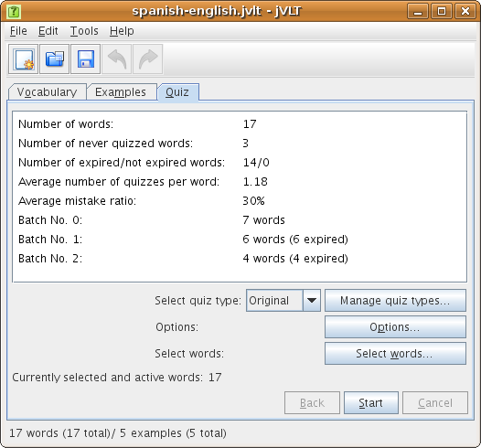
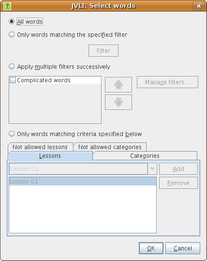
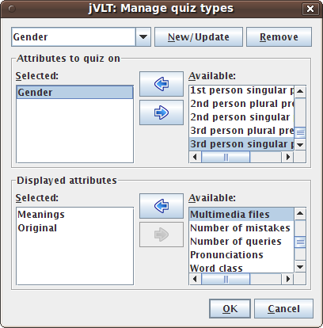
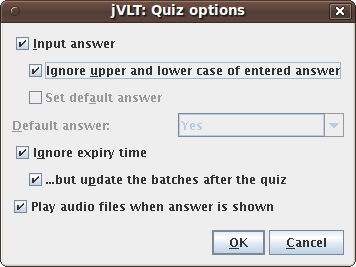
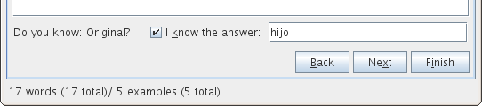
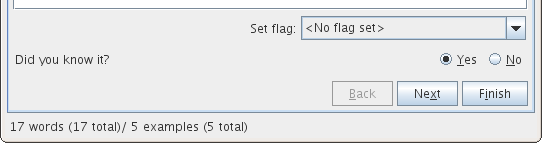
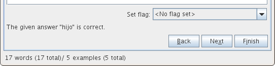

jVLT - a vocabulary learning tool
Quizzes
- Batch No. 0: 0 days
- Batch No. 1: 1 days
- Batch No. 2: 3 days
- Batch No. 3: 9 days
- Batch No. 4: 27 days
- Batch No. 5: 81 days
- Batch No. 6: 283 days
- Batch No. 7: 849 days

Before the quiz
Before starting a quiz, you can select a quiz type, specify certain options, and restrict the set of words that may appear during a quiz.Selecting words
After pressing the "Select words..." button a dialog appears that allows to select words by using one of four different methods.- All words: All words will be quizzed.
- Only words matching the specified filter: Only words that match a certain filter will be quizzed. If this option is selected, a filter has to be specified by pressing the "Filter..." button. The dialog that opens thereafter is described here.
- Apply multiple filters successively: You can also select multiple filters that will be applied successively. For example, you can specify that first all the words that have not been tested before will be quizzed, and after that the words of a certain lesson. You can add new filters by clicking on the "Manager filters..." button.
- Only words matching criteria specified below: Select this option if you want to quickly select the lessons or categories that should (not) be quizzed.

Selecting the quiz type
jVLT quizzes on the "Original" field by default. You can design other types of quizzes by using the dialog that appears after pressing the "Manage quiz types..." button.
In the dialog, you select the fields to quiz on, and the fields which are shown during the quiz question. You also have to name the newly created quiz type by entering a name into the text field at the top of the dialog and pressing "New/Update" afterwards. You can also change existing quiz types by selecting them via the drop-down menu at the top of the dialog and pressing "New/Update" after the changes have been made.
After having added a new quiz type and closing the dialog by pressing "OK", you can select the new quiz type via the "Select quiz type" drop-down menu.
Quiz options
In the quiz options dialog, you can choose between several options that determine how a quiz is performed.

- Input answer: By selecting this option, you determine whether you want to enter the solution during a quiz.
- Ignore upper and lower case of entered answer: This determines whether the entered answer will be checked for upper and lower case. If the checkbox is selected, the answer "spain" for the word "Spain" will be considered correct.
- Set default answer: If this checkbox is selected, you can set a default answer (either "Yes" or "No") for each word in a quiz.
- Ignore expiry time: By selecting this option, the expiry time of words will be ignored during a quiz. That way you can immediately test words again that have just been quizzed and that therefore are not yet expired.
- ...but update the batches after the quiz: If the check mark next to this option is visible, the words' batches are updated after a quiz even if the expiry time is ignored during a quiz.
- Play audio files when answer is shown: If there is an audio file assigned to a word it is played once the answer for this word is shown during a quiz. In case multiple audio files have been specified for a word only the first one is played.
During the quiz
Dependent on what you configured in the quiz options, a quiz can be performed in two different ways. The first possibility is that you enter the solution which is shown in the figure below.
After you pressed "Next", the solution is shown and a message appears saying whether your answer was correct or not.

The second possibility is that you do not enter the solution (you can write it on a piece of paper instead), and jVLT asks you - after you pressed "Next" - whether you knew the correct answer.

It's also possible to set the flags described in the advanced settings dialog during a quiz. Once a flag is set, the word is excluded from later quizzes.
You can cancel a quiz at any time by pressing "Finish". In the next section, it is described what happens thereafter.After the quiz
If you decided to finish the quiz, jVLT asks whether you want to repeat the words you did not know. Afterwards two lists are displayed which show those words you knew and those you did not know, respectively. If you mistakenly classified known words as not known or vice versa, you can now correct your mistakes by selecting the respective words and press the arrow buttons. You can also assign flags to the words that were quizzed by selecting the check boxes in the two lists. At last, you can decide whether to save the results of this quiz so they can be taken into account for future quizzes.